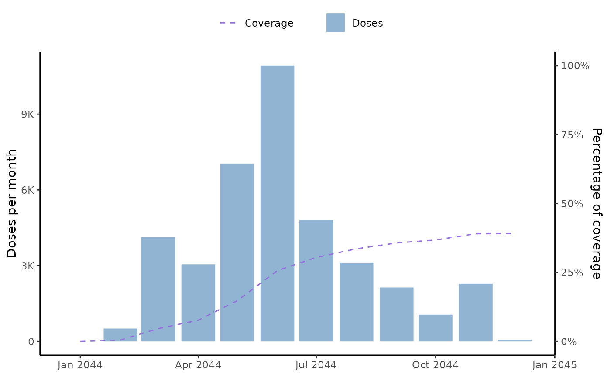

The function returns a plot of the vaccine coverage or the cumulative coverage (if cumulative = TRUE). The return is a 2-axis ggplot2 element with the number of vaccines per date in the left-axes and the coverage per date in the right-axes. It is possible to manipulate the colors, labels, legend and most of the graphic elements.
Usage
plot_coverage(
data,
vacc_date_col,
unit = c("day", "month", "year"),
doses_count_color = "steelblue",
coverage_color = "mediumpurple",
date_interval = NULL,
cumulative = FALSE
)Arguments
- data
dataset with cohort information (see example)
- vacc_date_col
name of the column(s) that contains the vaccine date to calculate the coverage
- unit
aggregation unit, must be either "year" or "month" or "day"
- doses_count_color
color assigned to the doses count
- coverage_color
color assigned to the coverage calculation
- date_interval
if NULL, the function calculates the coverage interval based on the min() and max() of the vacc_date_col. It is also possible to pass a custom date interval to truncate or expand the date interval (see example)
- cumulative
if TRUE returns the cumulative number of doses over the time window
Examples
data("cohortdata")
start_cohort <- as.Date("2044-01-01")
end_cohort <- as.Date("2044-12-31")
date_interval <- c(start_cohort, end_cohort)
plot_coverage(
data = cohortdata,
vacc_date_col = "vaccine_date_1",
unit = "month",
doses_count_color = "steelblue",
coverage_color = "mediumpurple",
date_interval = date_interval,
cumulative = FALSE
)
